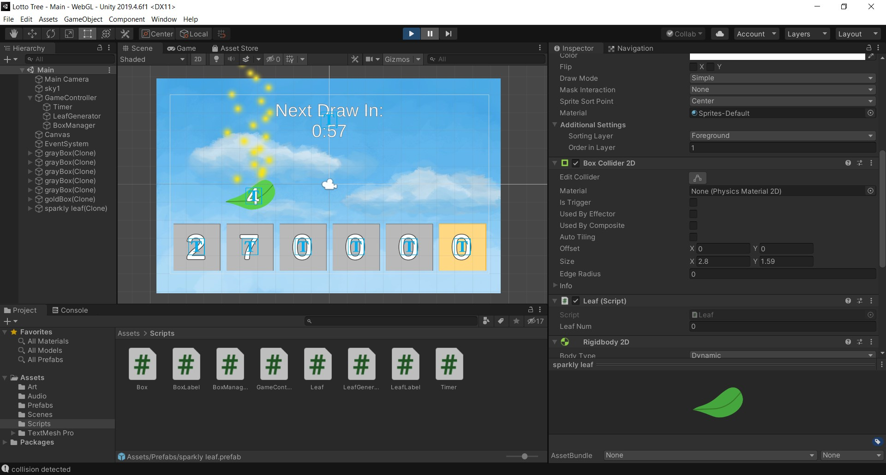

Presenting:
Windfall
Colorado Lottery Game Jam 2020

[ Justin Lonh ]
Colorado Lottery Game Jam 2020
Languages/Technologies Used: C#, Unity
This project was a monitor game prototype created by myself and Shayla Luong. In under 4 days, we created a game where every 4 minutes, a lottery drawing begins where leaves fall across the screen into boxes at the bottom of the screen, resulting in a 6-number lottery draw. Colorado Lottery specifically requested the creation of monitor games, which are lottery games with no direct user input, and are meant to commence very frequently (for example, every 4 minutes) and are typically accompanied by paper slips for players to place bets.
I used Python and stuff.
This project was very nice. We worked on it for many hours in order to complete our prototype within the 36 hour time limit. Although it was very stressful and we were using new technology for the first time, it was a very fun and rewarding experience.
I used Python and stuff.